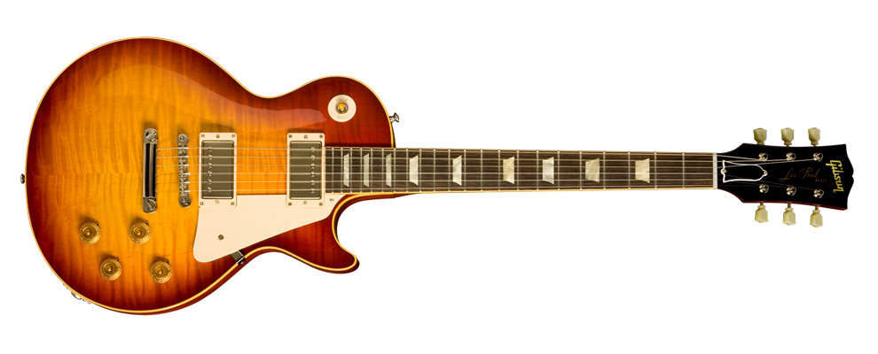
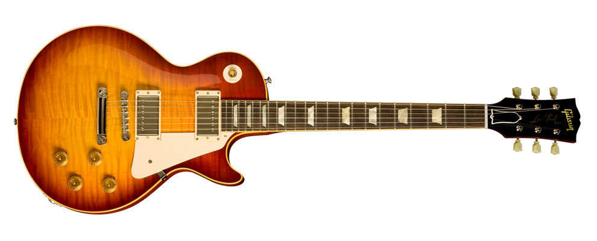

Gibson Les Paul
 

The Gibson Les Paul is a solid body electric guitar that was first sold by the Gibson Guitar Corporation in 1952.[1] The Les Paul was designed by Gibson president Ted McCarty, factory manager John Huis and their team, along with guitarist/inventor Les Paul.
The Les Paul was originally offered with a gold finish and two P-90 pickups. In 1957, humbucking pickups were added, along with sunburst finishes in 1958. The sunburst 1958–1960 Les Paul – today one of the best-known electric guitar types in the world – was considered a failure, with low production and sales. For 1961, the Les Paul was redesigned into what is now known as the Gibson SG. This design continued as a separate guitar when the traditional single cutaway, carved top bodystyle was re-introduced in 1968. The Les Paul has been continually produced in countless versions and editions since. Along with Fender's Telecaster and Stratocaster, it was one of the first mass-produced electric solid-body guitars. Les Pauls have been used in many genres, including rock, country, pop, soul, rhythm and blues, blues, jazz, reggae, punk, and heavy metal.
Wikipedia| Construction | |
| Body type | Solid, Single cut |
| Neck joint | Sent-in |
| Scale | 24.75" |
| Woods | |
| Body | MAhogany, Maple top |
| Neck | Mahogany |
| Fretboard | Ebony |
| Hardware | |
| Bridge | Tune-o-matic |
| Pickup(s) | A Burstbucker 3 humbucker at the bridge, P-90H at the neck, and a piezoelectric built into the bridge. |